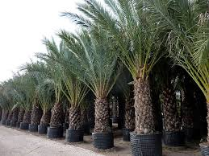
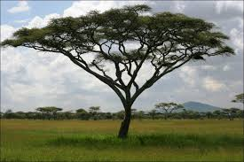

Flora de Egipto

Loto Egipcio
El loto egipcio, conocido como "Nymphaea caerulea", es una planta acuática que crece en las aguas del Nilo. Es famosa por su simbolismo en la cultura egipcia, representando renacimiento y resurrección.

Palma Datilera
La palma datilera es una de las plantas más emblemáticas de Egipto. Su fruto, el dátil, es un alimento importante en la dieta egipcia, conocido por sus propiedades nutritivas y energéticas.

Acacia Egipcia
La acacia egipcia es un árbol que crece en las zonas desérticas y tiene un gran valor histórico. Sus hojas y flores son utilizadas en medicina tradicional, y su madera es muy apreciada.